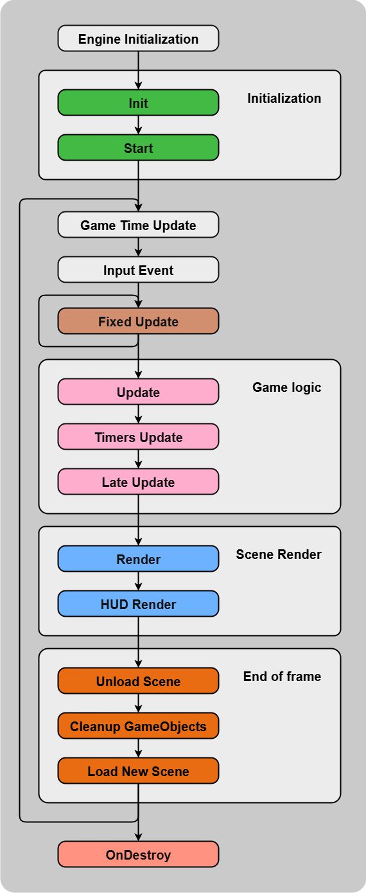

SFML Engine
About the SFML Engine
My SFML Engine is a lightweight C++ engine built with SFML (Simple and Fast Multimedia Library), implemented following the C++ Core Guidelines.
This Engine is built on the foundation of my Diji-Engine, using SFML over SDL. The goal is to deepen my understanding of programming, software architecture, game engine design and to improve development practices by exploring a new multimedia library. This engine is tailored for my use case, focusing on a more streamlined yet expandable system architecture with a cleaner pipeline and more robust internal systems than its predecessor.
Inspired by popular engines like Unity and Unreal Engine, this project incorporates event-driven programming and a modular component architecture designed for rapid iteration and clean code practices.
Built following the C++ Core Guidelines, the engine features a flexible component system amongst other systems that demonstrate my knowledge of modern C++ development and game development patterns.
Skills and Tools
- C++ 20
- SFML 3.0
- Custom Engine Architecture
- Event-Driven Programming
- Component System Design
- Template Metaprogramming
- Performance Optimization
- Resource Management
- Input System Design
- Scene Management
- Game Loop Architecture
- Programming Patterns
My Implementation
What I will present here is a fraction of what this project is about. I wrote an extensive README on the GitHub Page of this project which I encourage you to look at.

Newer Core Systems
- Event System: Implemented a complete event-driven architecture inspired by Unreal Engine, allowing components to create, broadcast, and subscribe to events with template support for data passing
- Advanced Input Manager: Built a sophisticated input system supporting HELD, PRESSED, and RELEASED states with O(1) command lookup using hash maps and template-based mouse/keyboard handling
- Timer System: Created flexible timers to call functions or lambdas on a delay.
- Scene Management: Advanced manager for scenes allowing automatic scene management with extra features like GameObject Spawning or GameObject finder.
- Pipeline Optimization: Enhanced the engine pipeline with "Start", "OnDestroy", and "OnEnable" & "OnDisable" lifecycle methods for component management
While I used advanced C++ techniques including template metaprogramming, the engine served as both a learning tool and a showcase of my understanding of game engine architecture and game programming.
This project solidified my understanding of engine development, game programming and advanced C++ programming. If what you read so far peaked your interest I invite you to read the GitHub page of the project.